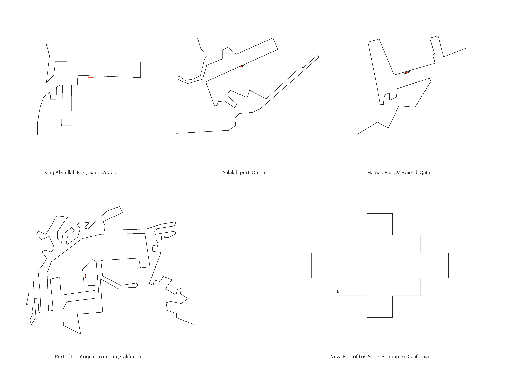
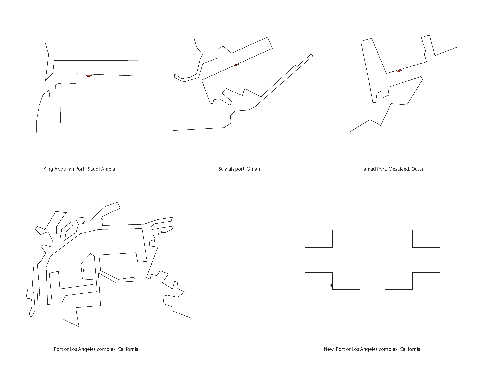
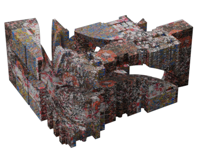
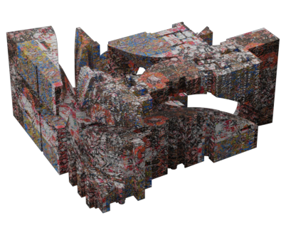
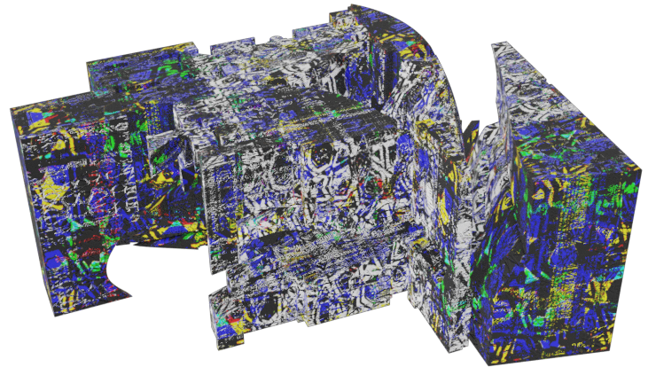
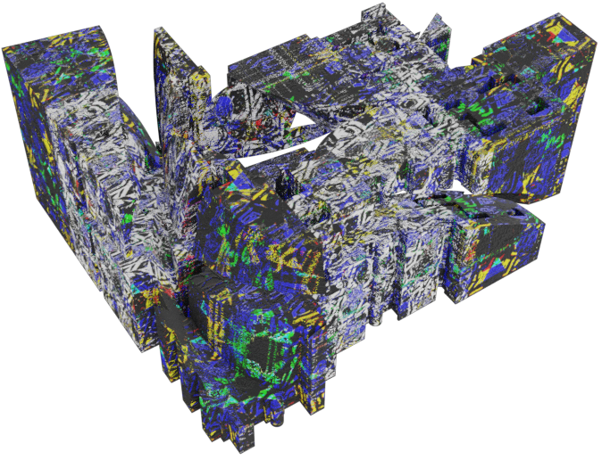
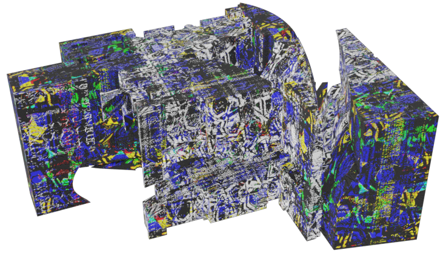
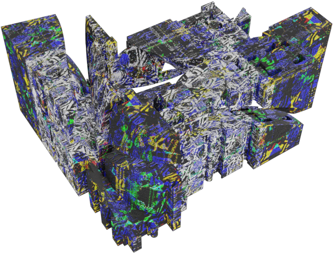

Research was done on the west coast of california on global warming and the effects of climate
change projected for the year 2100. key words where then pulled from that research
and fed into midjourney - an ai image generator. from multiple generated images I took
out key moments and used them to collage the pieces to create a better representation for the projected
instead of letting the AI decide for me. work is in progress still in the first phase.
Sectional objects and non western architecture. This semester was about discovering diffrent ways to generate form
and turn it into architecture. we began by researching into mosques and temples from the 13th century


 



 

 


